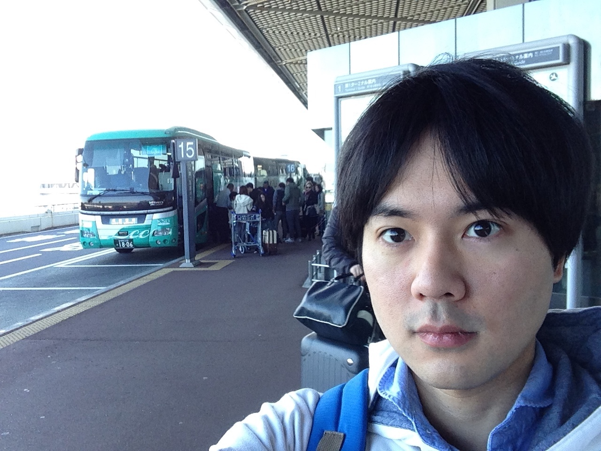
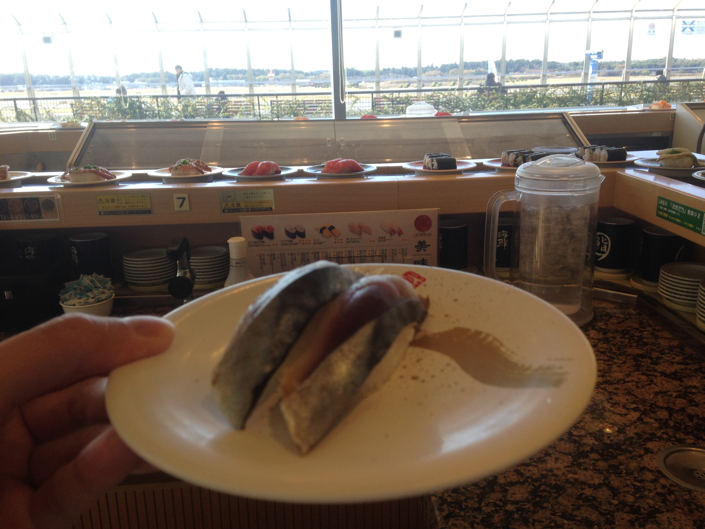
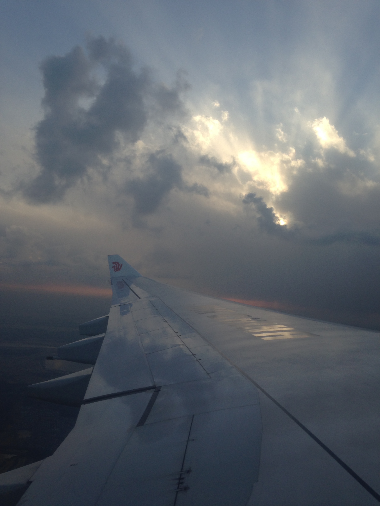
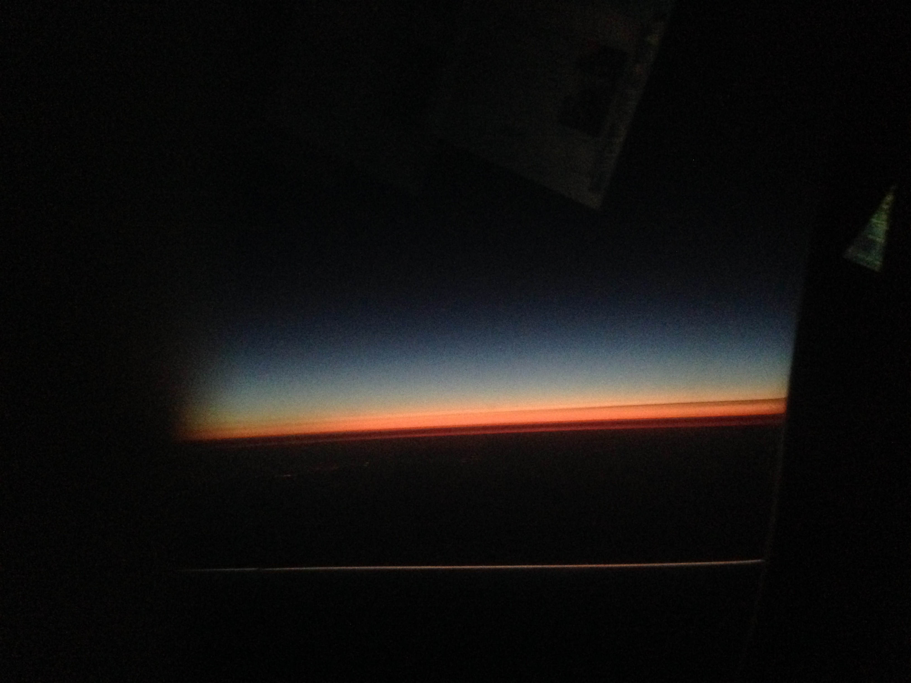
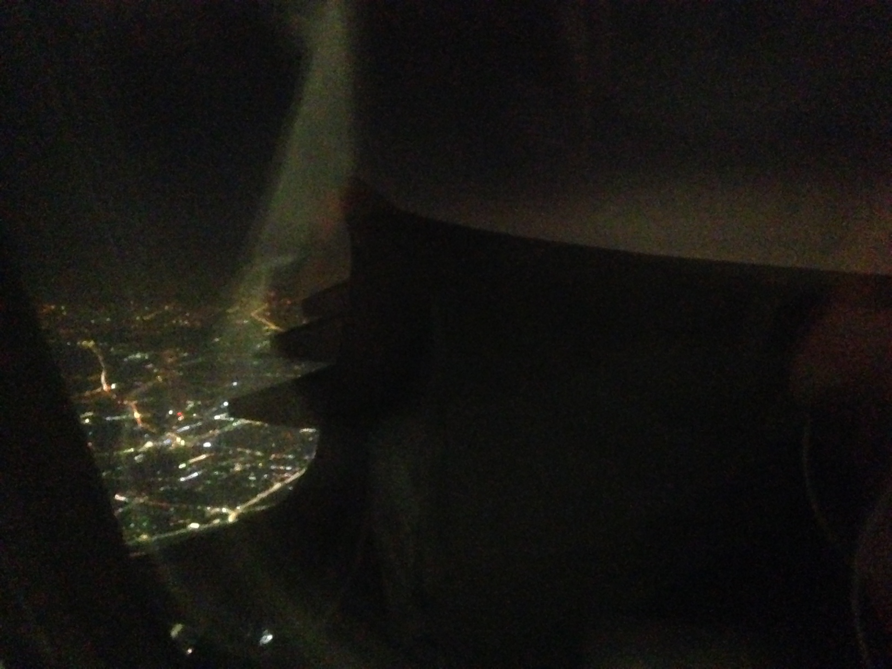
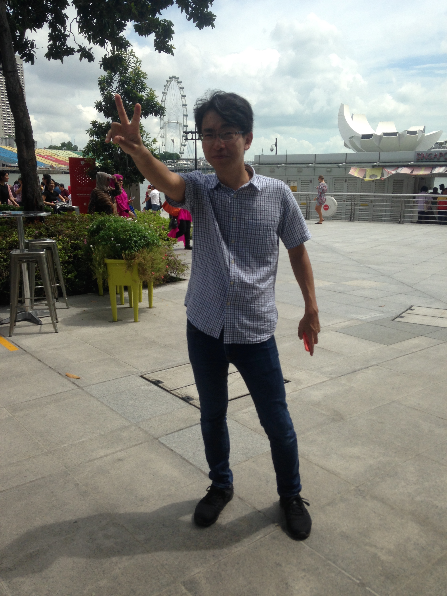
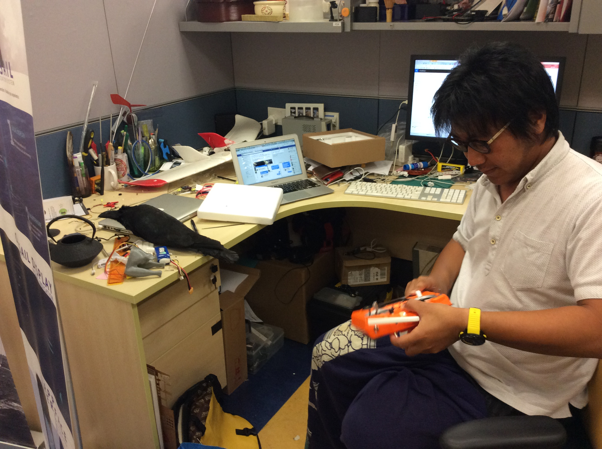
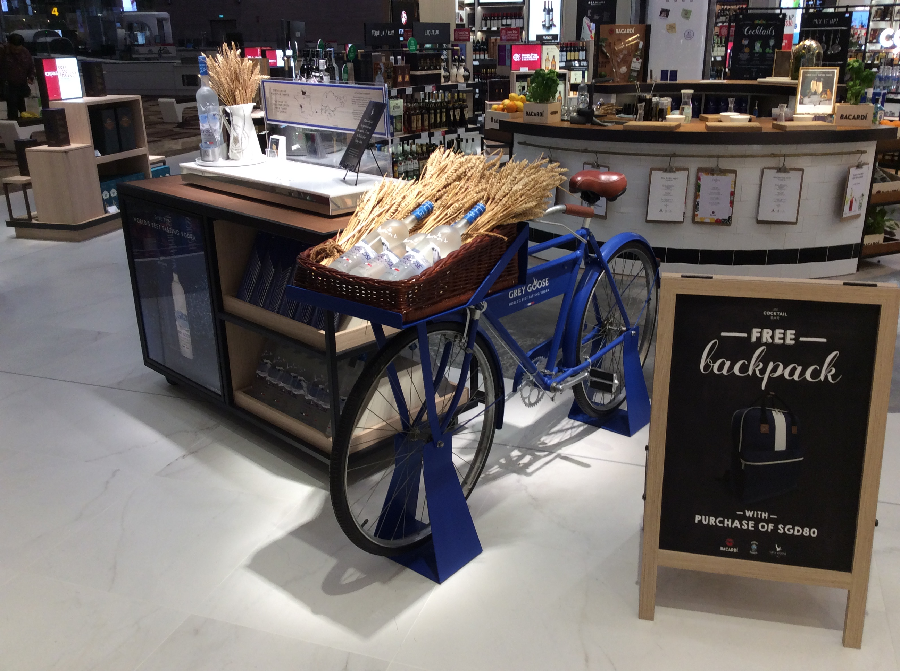
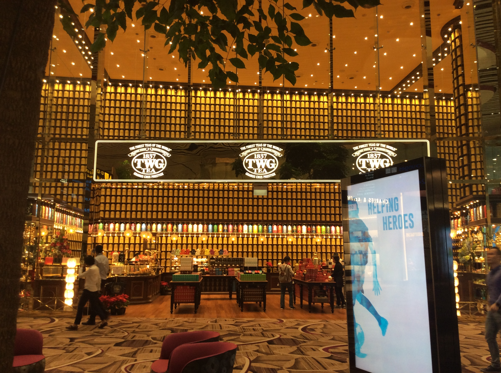
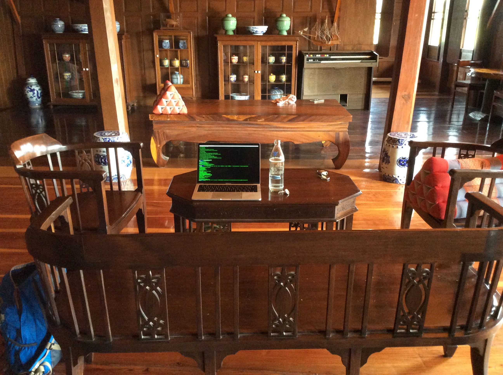

Nov 24 2017
「一人合宿」という自分への言い訳をつけて飛行機のチケットをとった。論文・仕事と怒涛の締め切りが続いた直後だったのでちゃんとたどり着けるか不安になってチェックリストを作った。
さすがに眠かった。成田空港は久しく使ってなかったのでちょっと不安でなんとかバスに乗った。バスの中でもずっとプログラミングしている。。これは旅行ではないな。早く着きすぎてチケット発券できず、チェックリストを埋める。保険は東京海上日動の２万円くらいのにしたけどちょっと高めかな。
「成田で回転寿司を食べると飛行機が墜落しない」という自分だけのジンクスを言い訳にして回転寿司。４回目くらいかな。１人できたのは初めてかな。うに・いくらは５００円の皿だったのでどっちか一つだなと思っていくらを食べた。フラペチーノよりは健康にいいはず。満腹になったら眠くなった。
離陸。直前のgit push。向こうに重そうな雨雲が見えた。下向きに靄がかかっていて、雨が降ってるのがわかった。その向こうは真っ赤な夕焼け。そして真上は晴天。地上から雲をずっと眺めていると別世界があるように感じる。近づけないはずの別世界。その別世界には飛行機で２分で行ける。近づいてみても別世界だけど、こんな近くにあったのか、という気持ちになる。夢を壊すのは技術のすごいところだ。こんな金属の塊が空を飛ぶんだから人間の技術はすごいなあ。飛行機は何度体験してもわくわくする。
西向きのフライト。沈む太陽を追いかけながら飛んでいるため、夕日がなかなか沈まない。じれったい。どんな山から見る夕日も飛行機のまどから見る夕日には勝てない。美しさが宇宙に近づいている。燃えるような夕日。というか実際燃えてるのか。ちなみに中国国際航空の機内は政府の要請で機内モードさえ禁止。写真も禁止。ヨーロッパやアメリカにいくのりで深セン行きを決めてしまったけど、覚悟が足りない？いってみれば敵国の人間だもんね、やばい。こわい。不安。劣等感すごい。 日本の飲食店では中国人の客が中国人のバイトに中国語で注文をとる場面を何度も目撃した。中国の大きさを初めて肌で感じる。あの経済学のチャートは嘘じゃないんだ！
中国語はダサいと思っていたけど経済成長とともにどんどんオシャレ・礼儀正しくなってく中国語を聞いたら、あれ、中国語喋りたいかもと思ってきた。フランス語もまだ初級なのに。とか思ってロビーでPC充電してたら同じ充電ポートを使いに来た黒人女性が電話しながら英語、フランス語、中国語を見事に使い分けていた。世界は広い。中国語やろうかな。
トランジットで北京。空から見る北京の街はSF感がある。平坦で広大な土地に道路が半規則的に走り、オレンジの光が道を流れるエネルギーの淀みのように点在する。時々、白や赤や青の光がきらめく。この明かりはLEDだ！ヨーロッパや東京に比べて低密度の光が広範囲に広がってる気がした。ここで生活する人は大変だ。
ChinaAirline（中国国際航空）はまあまあかな。ブランケットが厚手だったのが良かった。スクリーンはインタフェースも含め貧弱。ボタンを押すと反応するまでに３秒くらい間がある。機内食は牛肉の炒め物とパンで結構美味しかったと思う。
トランジットの荷物検査でリュックのなかみまで目視されたのはびっくりした。米国並みに厳しい。中国のGDPは日本の二倍だもんなあ。取られるものがあるとガードが厳しくなる。モダンな成功者中国に上陸した過去の経済王国日本の虫けら、という認識が正しいと考えると厳しさにも納得（納得してる場合じゃない）。
5時間のトランジットを有効活用するべくWifiと電源を探して歩く事１時間。どちらもみつからない。広すぎ。ぎゅっとしてほしい。ゲート確認するまで１０分歩く必要がある。はあ、まいってしまった。そしてやむなくこのブログを書き始める。
バッチリ睡眠をとってチャンギ国際空港に着陸。スパでシャワーを浴びる。２千円くらいで使えて快適。川内さんオススメのSIMをゲットしようとしたがiPhoneが認識しなかった。メカが好きそうな店員さんが懇切丁寧にトライしてくれたけどダメだった。。現金を下ろそうとしたらこれもカードが対応しておらず日本円を両替。この予兆がのちのち大変なことになるとはつゆ知らず。
ezlinkというスイカのようなカードを使ってマーライオンを目指す。川内さんと新田くんと待ち合わせているが、本当に彼らは現れるのか？
川内さんと合流して一通りシンガポールの歴史や風土や建物の説明を受ける。川内さん詳しい。イギリス領だったこともあって建物がイギリスチック。マレー人と中国人の国で、中国語が優勢。面白いのが、観光の国なので英語は通じるだろうと漠然と思っていたがお店の人以外は中国語を話す。彼らは日本人にも中国語で話す。まるで中国語が世界の共通言語だと言わんばかりだ。英語が世界の共通言語だと思っている僕らは特殊な世界に生きているのかもしれない。
バスに１時間程揺られてNUSへ。階段を登ってすぐに川内さんの研究室へいくと末田さんがいた。二人とも研究が面白い。彼らの研究室のすぐ隣は研究を特許に変身させる事務所が併設されている。援護射撃を受ける研究室、羨ましい。
研究室の隣の部屋には３Dプリンタやプロトタイプが置いてあるハードウェア系の研究室があった。相変わらず一人のスペースが広いがここだけみればできることは東大とあまり変わらないかな。
理科系の研究棟を駆け抜ける。食堂は東大の方が充実している。途中で外に出た。広大な土地に建物がいくつか見える。どれも日本の中流大学と同じ程度の大きさがあるが、一つ一つがNUS広大な土地に乱立する研究センターだ。キャンパスそのものを研究するための研究室が１つの建物を占領する。この規模感は東大にいたら想像さえできない。
バスに乗り、学生寮へ向かう。学生寮はいくつかのコンドミニアムからなる学生寮群にある。この周辺にはカフェや食堂を含めて、異国からマッシュアップされた学生をかき回してなじませるための部屋が確保されている。この１０名程度が入れる部屋は一見無目的に点在している。混ざらないものを混ぜるためのこの手法はMITでも同じだ。学生は勉強をしているがUCBerkeleyで感じた必死さはなかった（バークレーの学生はカフェにいるほぼ全ての学生が猛烈な勢いで課題をこなしていた）。
学生寮は巨大で中庭に滝が流れる。住居だけでなくビジョンを提供しているようだった。NUSは「あなたたちは優秀なのでこのくらいの待遇が適切です。建物をあげるので勉強をしてください」とメッセージを発信している。この圧倒的なメッセージの強さに東京大学は絶対に勝てない。絶対に勝てない。アジアの優秀な学生は十分なリテラシーがあれば必ずNUSへ行くだろう。日本の大学教育の未来は暗い。なぜこれほどまでの経済大国の一流大学はシンガポールの大学に蹴散らされるのだろうか。東大に入って待遇の良さを感じたが、NUSと比べると、全く草野球とプロ野球の違いだ。学生への魅力という意味で、草野球チームがプロ野球チームに勝てないのと同じ理由で、東大は絶対に勝てない。
１時間程度NUSの土地を歩いた。聞こえるのはほとんどが中国語。スコールが来て、スタバに入って休憩した。近くで買った短パンがとても役にたった。
さて、情報とお金は旅のバイタル。新田くんと一旦別れ、川内さんの助けを借りてSIMが入る携帯を買う。さらにSIMを買ってテザリングをすると。。。。。繋がった！やっとSIMを理解した気がする。
ホテルに近づくと赤い提灯がちらほら。AirBnBで予約したホテルはゲイランという風俗街にあった。風俗街なのにそれほど治安は悪そうに見えない。後から知ったが、アルコールも全面的に規制されている。新田くんと合流し、川内さんと一緒に火鍋を食べる。火鍋はビュッフェ形式でつけだれは３０種類のツボから香辛料等を調合して自分で作る。思ったより綺麗なコンドミニアムに少し感動する。
そのままナイトサファリへ。ナイトサファリは暗くてよくわからなかったけど、見たことのない動物がたくさんいた。肉体が重そうな動物ばかりだった。あと、サファリの音楽がやたらに楽しそうでワクワクした。川内さんに感謝。そのあと何しようか見たいな雰囲気になって、タクシーを探しながらマリーナベイサンズ近くのバーで飲むことになって、しばし夜景を楽しんだ。シンガポールの夜景はラスベガスに似ている。なぜかハリボテに光が付いているだけの薄い夜景に見える。シンガポールに来る前は快適な生活を期待していたが、どんなにオシャレに決め込んでもアジアの小国だからなのんか、自分はここには住めない。
タクシーに乗って帰ったら、最後のドアの鍵が開かない。欧米人の人に聞いたら、わからないからホストに電話すれば、といわれて、まだなんとかなると思っている。よし、テザリングをしてホストに聞こう。あれ、バッテリーがない。充電しよう、あれ、充電コードは部屋の中。選択肢がなくなればなくなるほど焦ってしまう。なにより体力が限界に近づいている。ここで中に入れなければ明日の待ち合わせはできない、ずっと連絡が取れなければ日本に帰れなくなるかもしれない、とか妙に不安になった。実際は駅に行けばwifiくらいあるだろうし、wifiがあれば全て解決するんだけど、これまで前提にしていたこと（クレカが使える、鍵があれば部屋に入れる、英語が通じる）が軒並みくづれた後、しかも体力が限界に近づいていたから飛行機の時間を間違えていた時程度に焦った。とりあえず助けを呼ぼうとピンポンしまくるが誰も出てきてくれない。途中で中国人にあったが助けてというと「お前は知らない言葉を喋ってるからダメ」とか言われる。何度頼んでも全く助けてくれる気配がない。自分が助けになれない、これ以上やっても自分の時間の無駄だ、というレベルではない。目の前に助けを求める人間がいても、その問題が自分が簡単に解ける問題なのか、それとも難しい問題なのか、知ろうともしない。人の考えを理解しようとしてきて、理解できるようになったと思っていたが、エレベーターを強引に閉めようとする彼の思考回路が自分には全く理解できなかった。人間に対する理解の甘さを思い知った。しかし、そのあとまた中国人に会う。この中国人は部屋に入れるまで３０分も辛抱強く待ってくれた。やっと部屋に入れたのは彼の良心のおかげだ。
物理的に存在しない良心を信じても、夜は来るし体力は奪われるし鍵は開かない。物理世界は人間が信じる良心について来ない。良心を前提とするな。良心を発揮する人と場合を選べ。
人間の良心に対する信頼を根底から覆された。優しい・厳しい、というレベルではなく困っている人を助けたいという気持ちが生来的なものではなく文化的なものであることがわかった。まえから思っていたけど自分は甘え体質があるらしい。誰かが助けてくれると思っている。誰かを助けたいと思っている。しかし人間の中にはそういう優しさのようなものが前提にない社会がある。普段どっぷり浸かっているIT企業はオープンソースやインターネットなどの良心の上に成り立っている。しかし良心が通用しない世界もある。というかもしかしたらそれが普通なのかもしれない。もっと自分が無意識のうちに前提としていることを疑う必要がある。
インドネシアへ。新田くんを待つ間、フードコートでラクサを食べたが、うーん、これなら表参道で食べたほうが美味しい。そのあと新田くんから遅刻の報告があり、１時間遅れで合流、フェリーに乗る。昨日の騒動がうそのようにスムーズに足を進められる。なぜなら、フードコートも、スタバも、モールも、そのた人工物も、自分が慣れ親しんだインタフェースを持っているからだ。道に迷えばきっとインフォメーションセンターがあるだろう。確かにある。そこには地図があるだろう。ある。今いる場所を指す言葉がわかるだろう。ロビーB。これはすべて今いるところが現代的なショッピングモールだからだ。そのあと新田くんと合流してマックで昼食を食べてフェリーに乗る。マックは心なしかソースが美味しい。
フェリーからみえた船。色がかっこいい。船で国境をまたぐのは初めてだったので、フェリー乗り場に入管があるのが不思議な感じがした。いがいと厳しくてシンガポールに戻ってくるのが不安になった（所得の高い方に動く方が入管は厳しくなる）。
フェリーを降りるとすぐに試練が待ち受けている。このあたりから自分の所持金が圧倒的に足りないことに気づき始める。日本ではほとんど現金を使わない生活をしているので、海外ならアメックスでどうにかなるだろうという考えが甘かった。アジアはアメックス使えないのね。。新田くんに頼んでインドネシアルピーをおろしてもらった。しかし下ろす方法もよくわからず、どのくらい下ろしたらいいかもわからない。とりあえず最低引き落とし額の８００００インドネシアルピーを下ろした。近くショッピングモールにwifiを探しに行き、スタバを発見。この旅で一番安心感を与えてくれたものの一つだ。いつもの味、いつものクオリティ、いつものwifi。スタバは分散化した都市機能の家だ！そこでインドネシアのインフレ率を知る。８００００インドネシアルピーは８００円。ゼロを２つ削ればいいんだ、という話になったが万の単位を超えるとゼロがいくつあるのか数えるのに時間がかかる。初めてインフレを肌で感じた。ということでちょっとバカンス気分を期待しながら、スタバで充電しながら、ホテルがある地区を目指すことにした。大日本帝国領だったなごりでナゴヤというらしい。マップを見ると1.4マイルと書いてあったので歩くことにした。あーーー。
マップを読み間違えたのか、マイルの計算を誤ったのか、歩いても歩いても目的地にたどり着かない。最初はまあ、大丈夫だろうという雰囲気だったのが、歩道の塀の向こうに廃墟が見え始め、歩行者が一人もいないことに気づき、ついに歩道がなくなると、気分は旅人。埃っぽい道をひたすら歩いた。すぐ脇をバイクが集団で通り過ぎる。もちろんひったくられたら終わり。時々たむろす人たちに襲われたら命もないだろう。怖い。シンガポールでも感じたけど、この恐怖は自分が日本人であるがゆえ、奪われるものがたくさんあるからだ。巨漢がサバンナを歩くようなもので、戦々恐々としながらひたすら道を歩いた。まあ一生に一度の思い出かな。何度も車両の切れ目を見ながら道路を横断した。建物はボロボロだしほとんど歩いている人がおらず産業もなさそうなのに、看板だけは下ろしたてのように綺麗。なぜ。学校もなさそうなのに「Engineering for Kids」という看板。いや、その前にやることあるだろう。突然近代的な建物が見えたと思ったら、また道路と森だけになる。新田くんと「文明」を見つけながら歩いた。東京に当然ある文明がここにはない。いや、彼らにはあるのかもしれない。ペットボトルでガソリンを補給する人々。
４時間。東京なら失われるのは体力だろう。異国では精神力だ。常に死ぬかもしれないと思いながら４時間歩いて、ショッピングモールにたどり着いた。いままで道路だけだったのに、いきなりどーんとショッピングモール。日本の田舎にジャスコができるのと同じ原理で、周辺のビジネスではなく外から大きな資本がローカルの消費を吸い上げる。シンガポールと同様にビールは規制されていた。新田くんはビールが飲みたいらしく、探し回ったがついにないことがわかった。そこからさらにホテルを予約して歩く。だんだん暗くなってきた。予約サイトにあるプール付きのリゾートホテルを想定しながら歩いているが、あたりの風景を見るにありそうにない。これがまたホテルにたどり着けるのか不安にさせる。しかしホテルはあった。一度向かいの別のホテルに行った後、やっとたどり着いたホテル。いきなり文明。アメックスが使える。コーヒーがある。プールがある。ベッドがある。壁に亀裂が入っていない。受付の人がスーツをきている。いきなり文明。いままで砂漠を歩いていたのにいきなり文明。そして僕たちは文明に行き慣らされていることを知る。僕たちのインタフェースは文明に最適化されすぎている。ドアに鍵がかかるのがどれだけ幸せなことか気づいた。セキュリティが精神に与える根本的な影響に気づいた。テレビがある。インターネットと電源と水と安全な食事がある。シャワーを浴びて砂埃を落とし、一階のレストランで夕食。おいしかった、というより安心感がすごい。
そのあと新田くんとマッサージを受けた。なんとか式マッサージとかいうのが何個かあって調べたら違いはわかったけど、アロマが一番価値がわかりやすいかなと思ってアロマオイルマッサージにした。部屋が空いていないので新田くんが先に入ることに。その間プールで泳いでいようと思ったら、もうやってないらしく止められた。そういえば今回とまるホテル５つ中３つにプールあるのに１つしか使ってないなあ。ちょっと寒いしね。このプールに関してはまた後で書く。部屋でコーディングしながら待ってたら電話でマッサージの人に部屋が空いたことを知らされ呼び出される。初めてのマッサージ、ドキドキ。さっきまでの戦々恐々とした雰囲気から一転して今度は興味本位のドキドキ。脳みそが感情の変化についてこれてないのを感じる。旅が終わったら別の回路が形成されてそう。
マッサージは特に気持ちよくなかった。まずアロマの匂いがしない。そして（筋肉がなさすぎるせいか）ひたすらくすぐったい。本当に必死で耐えた。早く終わってくれーと思いながら。ただしトントンと叩くマッサージは気持ちよかった。プロのトントンだった。部屋が薄暗いしマッサージのお姉さんは終始変な笑みを浮かべているし、体の距離が近いから本当ならエロい展開になるんだろうけど（新田くんは「スペシャル」マッサージを推薦されたらしい）カードと鍵しか持って行かなかった＋くすぐったさを必死でこらえてるのがわかったのか何もなかった。ホテルのフロアにあるマッサージ店なのでそういうのはないのかなあと思ってたけど、あるのね。
ここ数日過酷すぎて、脳がヘトヘトになってしまった。もともと温室育ちなのもあって、無視されたり怒られたりすると普段もってる自信が音を立てて崩れ落ちていく。もういっそのこと、もっと自分を過酷な状況に置きたい！ココイチのカレーの辛さを少しずつ上げていくように、ヘトヘトになった脳みそをさらに過酷な状況に置くチャレンジしてみたくなる。お金がなかったり学会や同行者がいると失敗できないのでいい機会なのかもしれない。次の日フェリーに乗って帰る。新田君が間違って大量のインドネシアルピーを引き出す。疲れが溜まってるのかスッポンを食べる頃には新田君は俺の計画性のなさにイライラしてまともに話してくれない。ひえーすみません。。
本当にアユタヤまで行けるのか不安。自分の認知能力が不安。朝になって支度をしている時によく考えたら、タイでつんだら帰国するだけだし、それでもいいじゃん、と考えたら気が楽になった。どうやら人間は不安を知らず知らずのうちに膨らませてしまうようだ。ずっと落ち込んでいたけど、グッと自身に変わった。
不安すぎて８時間前くらいに空港に着いた。というかお金もなければ他に見るところもない。げいらんの駅でチャージしたら最低チャージ額がほぼ所持金と一緒で間一髪助かった。なんとなくいい気分で空港へ。空港が一番楽しい。腹ごしらえでラーメンを食べる。あ、やっぱり海外のラーメンって美味しくないんだ。だしが薄い気がする。ezlinkというスイカのようなもののデポジットをリファウンドするために空港内を行ったり来たりした。エスカレーターが下りと登りで違う階に繋がってるのに気づけなかったり、行ったことのある道を覚えられずに何度も同じ場所に来てしまったり、ほんとうに自分は脳みその根幹がバカなんだなあと感心する。クリスピードーナツでスプライトを買って落ち着く。昼顔、何度見てもいいドラマだ。この時も往路でくすねた中国国際航空のタオルが大活躍。巻いているだけで保温できるとともに安心感がすごい。自分の人生はタオルが必要だ。
ezlinkをデポジットしたら２０００円くらいになって驚いた。ちゃんと読んでれば驚かないんだろうけど。とりあえず夕飯のぶんを残して一万円と一緒にタイバーツへ換金。一週間で１万円で足りるかと聞いたら足りるんじゃないと帰ってきたけど、意外とギリギリだった。チェックインをするためにターミナル４へ。綺麗なターミナルに感動して、一気にチャンギ国際空港が好きになった。夕飯を物色した。どれも美味しそう。他の人が頼んでいるのをみながら肉炒め丼を注文。甘辛いのにコクがあって美味しい。マンゴージュースを頼んだら何やらピンク色の液体が３ぶんの１くらいの値段で出てきて、やってしまったなと思いつつ、飲んでみるとフルーツケーキをミキサーにかけたような味。教育番組でやってたテレタビーズのテレタカスタードを彷彿とさせる。味も想像通り。そして意外と肉炒めにあう。。最高。。
食事を楽しんでいると「あ、喜多さん！」と聞き慣れた声が聞こえた。新田くんじゃん！ちょっと早めの飛行機に乗るために来ていた。新田くんもタイ経由なので同じ系統の飛行機なのね。そのあと新田くんとご飯を食べて、コーヒーを飲んだ。結構楽しかった。この時もタオルケット大活躍。ちょっと寒い時に取り出せるのがいいし、腰掛け・はおり両方使える自由度がいい。
チャンギ空港ターミナル４。チェックインカウンターは整列するポータルによってほぼ自動化されており、従業員の数も少ない。カウンターやポータルの高さが低く設定されておりまるで地面から生えた植物をインタフェースとして使っているようなシームレス感がある。全体は広く、明るく、フードコートから良い香りがする。手荷物検査も進化している。まずコンピュータを出す必要がない。つぎに航空券とパスポートは荷物を乗せた段階で従業員に手渡すため、次の身体検査でもたつかない。手荷物を載せるトレーはローラーコンベアの上を進む途中でトラッキングされている。次にコンベヤの先は二股に割れていてさらなる検査が必要な場合は透明なパネルで仕切られた従業員に近い方のレーンに流れる。この作業は分岐点のローラーが回転することで自動化されている。コンピュータを出す必要がないので受け取りももたつかない。ガラスで仕切られているもののチェックインカウンター、手荷物検査、ロビーは一つのフロアになっていてとても開放的。ロビーを少し入ると巨大なディスプレイがディズニーランドにありそうなアニメーション（魔法の国の空港の映像？）が流れている。
ロビーのデザインも優れている。どのゲートに行くにも必ずアルコールの販売コーナーを通り抜けなければならない。それぞれのディスプレイも統一感がありながら凝っている。写真はグレーグースのディスプレイ。鳥、小麦、自転車の「記号」をあつめることで上手にストーリーを形作っている。
さらに奥に入るとTWGの売り場がある。TWGはシンガポール発祥の紅茶ブランド。イギリス領時代に醸成された紅茶文化の発露といえる。３階分の高い天井をもつ広い空間が広がっている。壁には１０００を超える紅茶のツボが並ぶ。両側は巨大な合わせ鏡になっており無限にツボが並んでいるように見える。鏡は天井と空中の照明が広い空間に十分な明かりを灯せる助けもしている。中央には個性的なデザインの紅茶各種が並ぶ（全部欲しくなってしまうほどいい香りがする）。左側には日本では見かけないチョコやマカロンも売っている。クリスマスの音楽もマッチしている。とてもレベルの高いデザインに感じた。NUSの学生寮やナイトサファリもすごかったけど、TWGの部屋がシンガポールに来て一番感動した！
長いロビーの突き当たりにはレストランが７店ある。手前には３０名程度のキャパがある座り心地の良いソファー席がある。そしてレストラン街の２階部分はイギリス調のマンション外壁のモック。驚くべきことに、このうちの中央３分の１はディスプレイだ！突然音楽が流れ出して外壁が踊りながら下に隠れ、むき出しになった部屋には左側の部屋に男性、右側の部屋に女性が生活している。この二人は最初お互いの騒音にイライラしているが、ある日女性が不幸な日に引く悲しいピアノに男性は気づく。男性は励まそうとしてバイオリンで答える。で、ハッピーエンドというトーキーのショートストーリー。トーキーであることと音楽をストーリーの中心においてシンプルな男女関係を描くことで、国際空港を訪れる全ての人が理解できる内容になっている。最初は両隣の本物のモックと見分けがつかないので、いきなり男性が飛び出してくる驚きもある。ムービーが流れる途中でも下の店のライトの反射を忠実に取り込んでいるため、まるで小人がそこで劇をしているように見える。このディスプレイは小さいが両隣のモックを入れると５０mほどになるためロビーの入り口に近い位置からでも見える。人が来にくいロビーの奥にもテナントをはるためこのディスプレイは客寄せの効果もある。しかも充電つきソファーで明らかにここに人を貯めようという意志を感じる。空港でここまで感動できるとは思わなかった。
いま天蓋付きベッドの上にいる。時刻は午前４時。自分がここにいることが奇跡のように思える。顛末を説明しよう。空港に着くとSIMが上限に達しておりローミングができない。データ容量を増やそうにもカードが対応してない（泣）空港のwifiは頑張れば使えそうだったけどどっちにしろSIMが必要だったので、とてもインチキくさい売店でSIMを購入することにした。お互いに片言の英語しか使えない、お互いに信用がない。売店の人は結構優しかった。ここまでくると自分もサバイバルの本能が覚醒して、確実に繋がるまで確かめる。繋がらないので携帯を渡したら再起動して繋がるようになった。次はウーバーを呼ぶが、地図が示す自分の場所があっているのかどうかわからない。人に聞くもわからない。外に出たらメッセージが来て「ゲート２で青いバッグを前に抱えている」と伝えた。東京でのほほんと暮らしている自分ならこれだけ疲れている深夜に「青いバッグ」という言葉を入れられなかっただろう。。すると一台のタクシーが止まった。乗りそうになったが一応アプリの画面を隠して名前を聞き、ただのタクシーだと気づく。ささいなことだけど、こんなことも今だからできた。情報が得られない、現金がない、ホテルにつけないシナリオにリアルな死がちらついているからだ。留学してみたくなった。自分の腑抜けさを実感した。死のリアリティは人を根本から強くする。ウーバーに乗るも、安心はできない。アユタヤまで、真っ暗な道を１時間車で走る。意外と道路が整備されている。心配とは裏腹に、運転手は優しかった。が、ピンを立てたホテルの周辺はほとんど街灯がない。変わりに野犬がいる。怖い。ここにとまるのか、泊まるところが見つからなかったら死ぬ可能性あるなー。最終的にはアプリの正確な位置情報を頼りに川沿いの立派なホテルに着く。運転手さんとグーグルマップを使ったり電話をかけたりしてやっとホテルのゲートが開いた。部屋に入るも鍵は南京錠で簡単に入って来れそうだし、シャワーは弱く、水は信用できない。都市で当然あるセキュリティやユーティリティの偉大さを感じる。当然SIMがなければAirBnBの位置情報を得るために運転手のモバイルデバイスを借りたかもしれない。沖縄旅行で偶然泊まることになったホテルのシャンプーがなければ全然あわの立たないシャンプーでベタベタなまま眠りについたかもしれない。ウーバーがなければ空港で一夜を過ごしたかもしれない。それでも、人は簡単に死なない。道端で下ろされても歩く。歩いてどこかにたどり着いて生きる。ずっと続くくらやみをぼんやり眺めながら、情報は偉大だ。情報が数百キロを歩く旅人を数分で天蓋付きベッドの上に置いてしまう。生きるなら情報があったほうがいい。そして都市がもつセキュリティやユーティリティがアユタヤの死のリアリティと地続きであることを忘れない。ここまでこれたのは偶然新田くんとあって、偶然川内さんにSIMを教えてもらって、偶然ウーバーが発達してたからだ。要するに運が良かっただけ。ウーバーの運転手が言った「グッドラック」、初めて本当の意味がわかった。
この数日間、社会の厳しさの片鱗を経験している気がする。人間や自然は基本的には自分を襲ってくる存在だ。油断していると食べられてしまう。食べられてもいい、しかしなんだこの恐怖は！まるでずっと忘れていた重要な期末テストに前日になって気づいた時のような焦りと「つんだ感覚」がずっと続いている。アメックスを使えると思っていたのがこの旅の混乱の全ての元凶だ。命綱は二重、三重にするコストを取るべき。カードは複数枚作るべきだし、携帯が海外で使えるか確実な情報を得るべき。この旅で、お金と情報の重要性を痛感した。ウーバーが使えるのが幸いだった。なんせアプリ上で決済するのでぼられる心配がない。しかもアメックスが使える。ウーバーやAirBnBはインフラを提供しているだけではない、評価機能で第三者のサービスの質を向上している点に価値がある。
朝、ドンキーコングでしか聞いたことのない鳥の声が聞こえる。窓は開き戸なので締めると真っ暗になる。開き戸を開けると嘘のような南国が広がっている。下に降りていくと、ホストのおじさんがパンとコーヒーと卵焼きを作ってくれた。コーヒーを飲んで、一息ついた。連日のストレスで動く気が起きなかった。そうだ、そもそもこの数日はベッドの上でゴロゴロするためにアユタヤにきたんだった。ベッドの上で昼寝をしたり詩を読んだりお笑いを見たりしてボーっとしていた。建物も食べ物も気候も素晴らしいけど、なぜか自分はタイの文化が好きになれない。ぼーっとするのにも飽きてふらふらと外に出てみる。犬が吠えてきてこっちに来て後ろを狙ったり足の匂いをかいだりする。その度に飼い主の人がおこる。ちょっと離れたところのホテルに潜入した。中国人の観光客がたくさんいて、紛れさせてもらった。どこまでやったら怒られるのか試したかった。そして怒られることなく飽きてしまい、さらに歩いたレストランで遅い昼食を食べる。まだ信用できておらず火の通ったものを恐る恐る注文した。ココナッツジュースを頼んでみたら、中華街で飲んだものよりずっと美味しかった。この辺からやっとリラックスできるようになった。６００円くらいで、少し高かった。そこから少し歩いてコンビニまで行った。
タイにいると日本製品の偉大さを感じる。シャワーについているボイラーは東芝製、フェリーのテレビや冷蔵庫はシャープ製、車はもちろんトヨタ、エレベーターを含めた大型電気機器は三菱電機。日本製品はアップルが生活をダイレクトに革新したように日本製品はアジア人の日常を革新した。でも、テレビは時々LG。タクシーはウーバーだし、ウーバー運転手はiPhoneでGoogle Mapを使う。電気製品に注目すると、まるで２０世紀と２１世紀のイノベーションの汽水域にいるようだ。
仕事が体に染み付いている。この日も昼くらいまで寝ていたが、ぼーっとするのも飽きてしまい、仕事がしたくなる。自転車で夕日の遺跡を見たかったので、１時間くらい集中してコーディングしてから自転車で出かける。なぜだろう、カンボジアで感じた神がかり的な風景はなかった。アユタヤはチャオプラヤ川と地利に恵まれアジアの貿易拠点・米の産出国として栄えたあと、ビルマの最後の王朝に徹底的に破壊される。そのためか、カンボジアで見たアンコールワットのような絢爛さはなかった。ビルマはのちにイギリス領インドに占領される。
こちらではシャンプーではなくヘアクリームという泡立たない洗浄液が使われる。ちゃんと洗いたかったのでシャンプーを買った。帰りにアユタヤ遺跡の公園を歩いていたら、シャンプーを入れていたビニール袋に穴が空いた。ビニール一つとっても強度を気にしないと不便なんだなあ。シャワーの水圧が弱く、ドアに隙間があって、スプーンは薄い。普段使っている製品のありがたみを感じる。実はこの時、鍵を落としていた。部屋に着いたら鍵がなくて焦る。だんだん焦るのにも慣れてきた。もう少し慣れるまで焦りつづけたい。
体が疲れているのか（普段の生活が抜けないのか）お昼くらいまで寝ていた。下に降りるといつものように美味しい昼食を作ってくれた。製品はいまいちなのに、食べ物は目が飛び出るほど美味しい。日本の田舎でもそうだけど、道具と料理の味の進化の相関はないらしい。
世界はほとんど砂漠だ。長い砂漠を足で歩いていると人生が終わる。だから車輪と熱機関を作る。グーグルマップやウーバーがなくても実はアユタヤを訪ねることはできる。ひたすら歩き続ければいい。だけど道に迷ったり途中で諦めかけたりして１ヶ月くらいかかるだろう。それを１日でやってしまうところに技術の人生的な良さがある。技術があるから短い人生で色々な物を見ることができる。
アユタヤを出てバンコクへ。その前の夜にガラス瓶を割ってしまった。あと今夜の料金払ってない。昨日の夕飯も。本当なら全部自分から払うべきなんだろうけど、黙ってたらチャラになるのかやってみようと思った。あとで人間の信頼関係を破壊していることに罪悪感を覚える。もちろんちゃんと請求してきた。そしてAirbnbのアプリがクソすぎてなかなか送金が完了しない。とりあえず機能するようにして潤沢な資金でカスタマーサポートに投げてるっぽい。IPOしてもまだまだ成長過程にあるのか。
アユタヤに来るときは真っ暗だったからわからなかったけど、世界有数の米の産地だったのも頷ける。永延と平らな土地が続いている。ここでたくさんコメを作ってあの帽子みたいな塔をたてたのかと、アユタヤ王朝の様子を想像した。川もあるし地利もあるし、ウハウハだろうね。タイムスリップしたら行ってみたいかも。しかし土地の恵みに頼ったからこそビルマに破壊されるのも早かったのかもしれない。バンコクでも感じたけど、タイはチャオプラヤ川流域に築かれた文化を守る力がなかった。いまもない。ビルマに占領され、イギリスに占領され、いまはマスプロダクトに占領されつつある。都市の進化は温故知新がキモだ。時代とともに要請は変わるので保守的ではいけないけど「これをやめたら自分たちの存在意義がなくなる」というところは譲ってはいけない。それを国家レベルで進めるのだから大変なことだ。いま残っている京都、パリ、ロンドンの文化が均質化しないのはほとんど奇跡だ。
だんだん慣れてきてプログラミングをしたくなってきた。１１時頃に起きてプールに飛び込んで目を覚まし、シャワーを浴びてコーヒーを飲みながらメールを返したりする。３日目にして集中できる環境が仕上がってきた。しかし、時間がない。急がなければ。
慣れた頃にはだらけはじめた。一日中だらだらして過ごした。うまくいかないものだなあ。ストイックに集中できなかったのは残念だったけど、７階の部屋から時々夕焼けを見たり、ベッドでお笑いをみたり、腹が減ったら食べに行ったりして、だらける場所としては申し分ない。一泊がこの価格なら。一人でいるには寂しさを感じるくらい部屋が広いので、東京に帰ったら小さな部屋で暮らそうと思った。
最後の二日で合計８時間くらい集中してプログラミングをする。LSTMCellのサンプルがpytorch公式のリポジトリにあったのが幸いしていけそうな気がして来た。が、まだまだ先は長そう。難しいなあという思いと、これが自由自在に使えるようになったら絶対に楽しい、という思いが混在する。
ワットポーの付近はウーバーが禁止されているらしく降りたら警察に止められる。運転手と警察がなにやらタイ語で言い合ってる。さて、万事休すか。降りる前に運転手の友達から英語でワットポーの近くでウーバーは禁止されてるみたいなことを言われたけど向こうもこっちも電話越しの英語をよく聞き取れなかったが、ウーバーと言われないように友人を送って来たという体でお願いね、と言われてたらしい。雰囲気だけど、こちらでは警察は民間を守るためにあるのではなく国を維持するためにあるように感じた。資源が少なく、統制が難しそう。一方で民間はテクノロジーを生かしてどんどん前に進む。国の役割を問われているのは先進国だけではない。
ワットポーはなるほどなっとくの宮殿。アユタヤもそうだったけど先のとんがった帽子のような塔がいくつも立っている。最初は子供が砂場で作ったありがちな形だと思ったけど、ワットポーの執拗で巨大な帽子を見るとせ意見伝説のワンシーンのような神々しさが醸し出される。そして横たわるブッダ。ストリートファイターで見たやつだ。こっちの方が大仏より作りやすそうだし、安心感がある。タイタニックしかり巨大であることが価値があった時代がある。うん、大きいと納得感がある。存在しないはずのものがあるような気分になる。そして外国人環境客の密度！アユタヤが嘘のようだ。
３０分程度迷いながら歩いてかおたん通りへ。劣化版原宿。どうも自分はタイの文化が合わない。料理も美味しいし、気候も温暖なんだけど、すべてが雑。そして文化基盤が弱くて海外のマスプロダクトにすぐに影響される。料理だけがオリジナルを持っていて、あとは「タイっぽくした」ファッション、デザイン、建築。それともタイの幻想が強すぎた？どっちにしろもうしばらくこの国に来ることはなさそう。途中で食べたトムヤムクンは美味しかった。日本より全体的に甘め。
食べ物にしか文化を感じないけどタイ料理だったら表参道でいいや
深セン空港に着いた。前日に予定していた宿泊先が女性限定でキャンセルになり、試しにノープランで乗り込んでみることに。入管でビザや滞在先の欄を空欄にしていたので引っかかると思ったら何もなく、しかも荷物検査が緩い。まとめてX線検査機にかけるだけ。これでいいのか中国。。到着した直後から数年前にイメージしていた汚い中国が払拭される。成田より綺麗じゃん。偽札がはびこる中国ではAlipayが紙幣より普及している。Alipayは中国の銀行口座がなければ使いえないことはわかっていたので、とりあえず換金しようとするが到着は２３時。やってないらしい。現金さえあれば地下鉄に乗れそうだった。まあ行くあてはないんだけど。多分野宿するなら空港がベスト。
一通り空港内を見学してベンチで仮眠。ちょっと傾斜がつけてあって落ちそう。それでも耳栓とアイマスクがあれば実質ホテルで寝ている状態にかなり近くなる。あとは体温や床の硬さなどの肉体的問題。往路でくすねた中国国際航空のタオルが大活躍。バンコクで寝付けなかった時も役に立ったし、温度調整にも役に立った。基本これを腰に巻いて生活をしていたし。。タオルケットは人生の質にここまで貢献できるんだなあ。盲点。
アユタヤまでの危機一髪で肝が座ったのか、あまり焦らなくなった。ダメなら帰ればいい。飛行機あってよかったね。
深センの地下鉄にのって華強と呼ばれる深セン版秋葉原へ。途中で地下鉄が止まって数時間待った。こちらの満員電車は人を詰め込まない。代わりに乗れないと思ったら駅員が強引に人を下ろす。なんども満員電車を見過ごして乗れたと思ったら次の駅で「全員でろ」みたいなことを言われてまた待つ。と言うのを数回繰り返して数時間。やっと華強に降り立った時にはちょうど眠気が冷めていた。
うん、アキバだ。これでもかと言うくらいの種類の電子部品が並んでいる。これなら電子部品には困らない。同時に梱包もしていて、大量の電子部品を配送しているようだった。そして英語の通じなさ半端ない。英語を聞くとアレルギー反応を起こしたように無視するかフリーズするかは日本人と同じだ。
助けて欲しい人がいるのに秒速で首を振る人の世界が理解できない。SIMカードを探すこと１時間、１０人くらいに聞いてやっと見つける。なぜか最後の４人はとても丁寧に教えてくれた。最初に親切にしてくれた人はポーランド人だったから欧米人はやはり異国にいる立場が同じだから親切なのか（そして英語が通じる幸せ！）と思ったけど、アップルストアにいた中国人は客なのに店の外に出て指南してくれた。中国人のすごいところはこちらが中国語を使えないのをわかってるのに中国語で話しかけてくるところ。どういう思考回路だよ。でももっと頭のいい人ならもっと早くSIMカードにたどり着いたんだろうな、と自己嫌悪に陥る。
ホストに連絡をとって大刷駅（Grand Theater）へ。駅前は緑の隙間に大きなビルがいくつも見える丸の内のような場所。中国語を勉強しに来ているオーストラリア人のイワンともう一人の女の子と合流。連れられて少し入ると旧市街と思われる建物に到着。ジャッキーチェンの映画で見たことのあるようなボロボロの建物の最上階にシェアハウス。６百円、さすがだ。でも床や壁は綺麗にしてある。匂いがせず、健康的な生活を営んでいるようだ。建物はボロボロなのに不安にならない。むしろ彼らの貧相なながらも健全な精神に感心する。